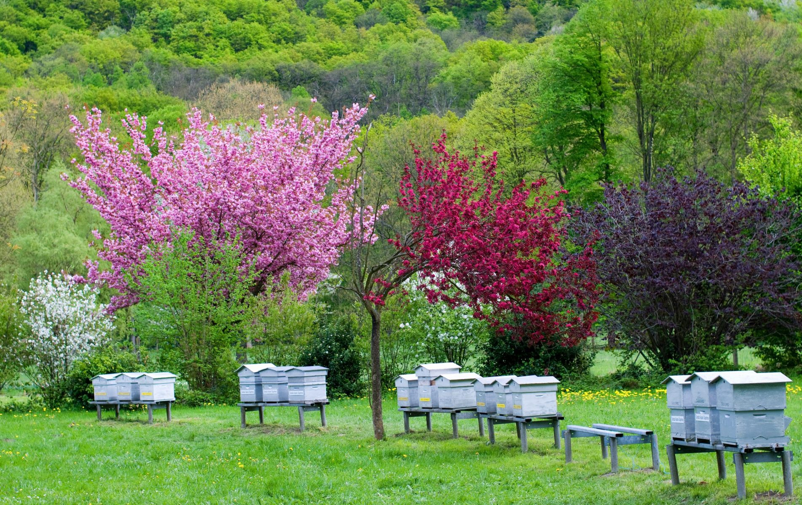

Horticulture-Apiary-Duckery-Fishery
The "Full Ecosystem" Model: Integrating pollinators, pest controllers, and waste recyclers in one garden.
1. Site Feasibility & Pre-requisites
🐝 Floral Calendar
Year-Round Blooms.
For the Apiary (bees) to survive, you must plant crops that flower at different times (e.g.,
Mustard, Sunflower, Drumstick) to ensure nectar availability all year.
🌳 Shade & Sunlight
Multi-Tier.
You need tall trees (Coconut/Mango) for shade and bee boxes, and sunny spots for the fish pond
and ground crops (Turmeric/Ginger).
💧 Water Body
Small Pond Required.
A small fish pond (even 20x20ft) is essential to house the fish and provide a swimming area for
the ducks to clean themselves.
2. Infrastructure & Layout
This layout uses "Vertical Space" (Plantation) and "Horizontal Space" (Pond/Garden) simultaneously.
🚧 Construction Specs
- Apiary: Place bee boxes under the shade of trees, facing East. Keep away from the compost pit (bad smell irritates bees).
- Duck House: Build near the pond. Ducks will swim during the day and forage in the orchard for snails/weeds.
- Vermicompost Pit: Build in a cool, shaded corner. Use farm waste (leaves, weeds) and duck manure as input.
3. The Nutrient Web
A complex web where every species serves the other. Nothing is wasted.
Control weeds & pests
Enriched by Duck Manure
Irrigated by Pond Water
Pollinate the Garden
Recycles Garden Waste
4. Operational Calendar
Managing five components requires a strict schedule.
Morning: Release ducks into the orchard. Feed fish. Evening: Collect duck eggs and lock ducks.
Collect fallen leaves and weeds from the garden. Dump into the vermicompost pit. Sprinkle water to keep worms moist.
Inspect bee boxes for ants or mites. Clean the bottom board. Check sugar syrup levels in lean seasons.
Honey: Extract twice a year. Fruits: Harvest based on season. Fish: Harvest once a year.
5. Risks & Solutions
⚠️ CRITICAL: NO CHEMICAL SPRAYS
Bees are your indicator. If you spray chemical pesticides on your fruit trees, your entire bee colony will die immediately. Use Neem oil or vermiwash only.
| Problem | Solution |
|---|---|
| Ducks damaging vegetables | Ducks eat soft leaves. Fence off the vegetable patch; let them roam only in the orchard. |
| Ants attacking Beehives | Place the legs of the bee box stand in bowls of water (water barriers). |
6. Economics
💰 5 Income Streams
- Honey & Wax: High value, non-perishable.
- Fruits/Crops: 20% higher yield due to Bee Pollination.
- Duck Eggs/Meat: Regular income.
- Fish: Annual bonus income.
- Vermicompost: Sell excess fertilizer.
📉 Zero Waste
- Weeds: Eaten by ducks or composted.
- Fallen Fruit: Eaten by fish or composted.
- Manure: Fertilizes the pond and crops.